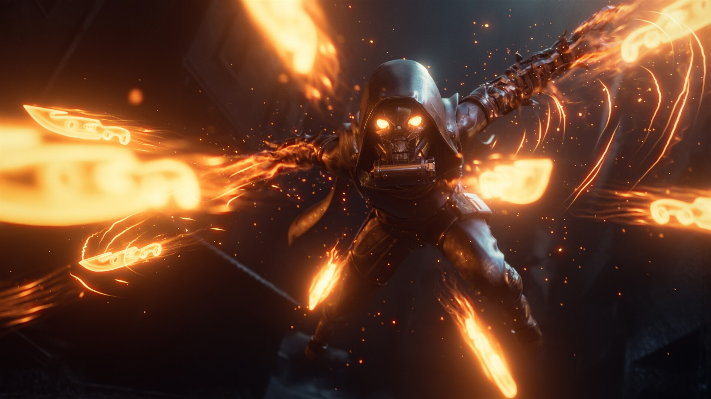

Hunter
"What does it mean to be a Hunter? I say, it's all about
where you belong. The Warlocks have their libraries, the
Titans have their walls...But Hunters belong in the wilds." —
Cayde-6.
Hunters are a class of guardians that use stealth, hand cannons,
sidearms and long-ranged weapons to kill their enemies, Hunters
lean towards the tactical sides, where they use throwing knives
and smoke to disorient their foes. Hunters also have cloaks
which provide excellent camoflauge in the wild.
Overview
Through manipulating the Traveler's energy, hunters learnt how to surivive in the wild, assassinate prey, and rediscover lost secrets from the Golden Age. In the culture of Hunters, those who become close friends are expected to take up the cloaks of their fallen comrades to finish what they started.
Abilities
Every guardian class has their own special ability set, given by the Traveler, which is unique from other classes, although some are shared between them such as, "Double jump", and "Grenade-based" abilities whose effects vary by class. However, Hunters have a unique set of skills, most of which are listed here:
Subclasses
>> Nigthstalker:
"Draw from the Void. Light the way." A
 Void based subclass meant for weakening enemies for increased
damage while also buffing your fireteam and increasing
survivability.
Void based subclass meant for weakening enemies for increased
damage while also buffing your fireteam and increasing
survivability.
Supers:
- Shadowshot:
Tether enemies to a semi-large void orb, marking, weakining, suppressing, and slowing them for your allies.
- Spectral Blades:
The players uses a pair of Void knives allowing them to go invisible.
>> Bladedancer:
"Beautiful lethality, relentless style."
An
 Arc powered subclass suited for intense crowd control within
enclosed spaces.
Arc powered subclass suited for intense crowd control within
enclosed spaces.
Supers:
- Arc Blade:
Summons a blade imbued with Arc light, which consumes foes with lightning.
>> Gunslinger:
"A lone wolf who lives for the perfect shot."
A long to medium ranged
 Solar subclass with emphasis on hitting targets with a singular
hard hitter or multiple precision shots.
Solar subclass with emphasis on hitting targets with a singular
hard hitter or multiple precision shots.
Supers:
- Golden Gun:
The player wields a flaming pistol that does extraordinary damage in one shot or multiple.
- Blade Barrage:
The player sends forth a barrage of exploding knives.